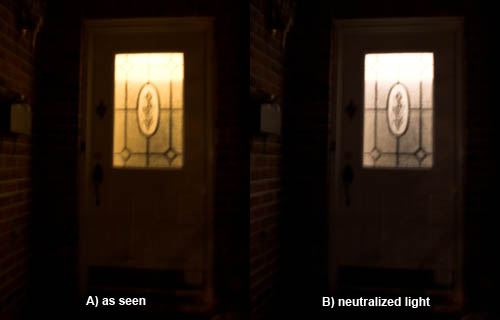
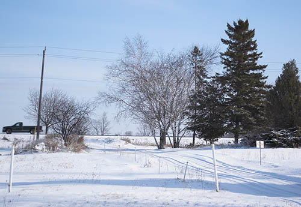
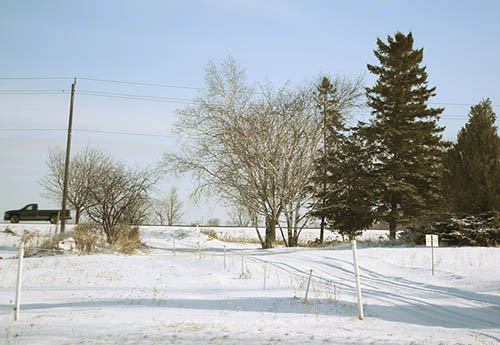
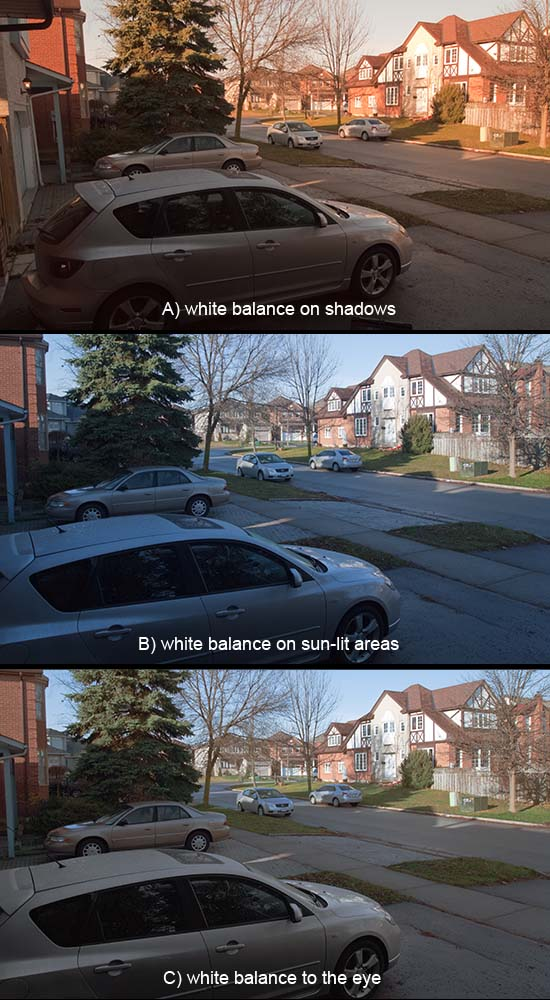

|
Colour 101Part 2: Seeing the LightVersion 2.1, © 2007, 2009 by Dale Cotton, all rights reserved Deconstructing the lightUnfortunately, understanding hue, saturation, and lightness is only half the battle. When we mixed poster paints we took the paint pigments into account, but there's another and critical variable: the light by which we see them. Normally, we think of light purely in terms of its brightness, but all light also has its own colour, from the ruddy glow of a candle, to the gaudy hues used in stage lighting created by putting coloured gels in front of spot lights.  Fig. 11: Front door, tungsten within The human visual processing system makes a valiant effort to compensate for the effect that different light colours have on what we see, but even expensive digital cameras have no end of trouble trying to match the compensation our brains apply. Part of growing as a photographer is to train yourself to not automatically compensate for either the brightness or the colour of the surrounding light. Try this: Simple experiment 2: After dark go outdoors in front of your house or apartment building or whatever and look at the indoor lighting through a window or glass door from outside. Look for a window or lobby door on to a room lit with ordinary tungsten bulbs, then go directly into that room. If the light looked non-white when seen from outdoors, does it still look that way indoors? This came to my attention many years ago, standing outside her mother's house after dark with my first wife. I pointed out how much more orange the living room light now looked than when we were in the room a few seconds earlier. She insisted the light was still white and could not be persuaded otherwise. In terms of Fig. 11, her brain rendered the scene like B); my brain, like A). (I feel a certain pride in recalling that even at that green age I was already able to recognize the warning signs and did not persist very long in trying to make my case. ;)  Fig. 12: Snow shadows Simple experiment 3: Go outside on a snowy blue sky day. Notice what colours shadows on the snow are. No snow? Take a sheet of white paper and put it in a shadow. A clear blue sky is a huge source of blue light. The sun itself is a source of essentially white light when overhead, becoming more yellow-orange the closer it gets to the horizon. In Fig. 12 we see the sunlit portions of the snow as being close to pure white (very slightly bluish); but the shadows are lit by light from the blue sky and so have a strong blue-grey cast. Scatter: actually, the situation is a tad more complex, but worth untangling. In Fig. 12 everything that is day-lit, including most of the snow, is illuminated by a combination of direct sunlight plus scatter from the blue sky, with the sunlight being far more intense. Everything that is in shadow is lit by the blue sky but with a significant amount of scatter from the sunlit surroundings – which is why the shadows are grey-blue instead of more nearly pure blue. While our brain will try to neutralize the colour of any ambient light, in the case of the scene in Fig. 12 any correction it applies to the day-lit majority of the scene fails in the shadowed minority portion of the scene. White balance: This fact has an important implication for white balancing. This implication intrudes whether your camera is on auto WB or whether you set WB manually or whether you are trying to correct an image in post-processing. Whenever there is a disjunct between the colour of the primary light source, such as the sun, and the colour of the secondary light source, such as the sky, there can be no single WB for the entire scene. In particular, if you white balance on the light colour but the majority of the scene is in shadow or vice versa, your results may not be pretty. Most non-novice landscape photographers and painters are hep to the fact that morning light and evening light are "better" (meaning warmer) than midday light. As you start thinking in terms of the actual colour of the "white" light you are working in, you'll find that your brain will reduce the degree to which it neutralizes light colour over time, allowing you to work more intelligently.  Fig. 13: Warming up a cool scene In particular you will find that blue light literally depresses – gives the blues – to a scene. The obvious solution is to avoid working in blue light conditions, such as midday under blue skies or overcast. A less obvious approach is to take the shots anyhow, then remove the resulting blue cast during post-processing. To illustrate the point, I've removed the blue cast in Fig. 12 to create Fig. 13. The shadows are now a neutral grey colour. (Ironically, Fig. 12 is arguably more effective with its brrr-inducing blue cast intact.) Beyond second-guessing how your brain post-processes the world, art and photography are all about noticing things. On an overcast day notice that the cloud cover is rarely just a neutral grey. After dawn it starts out as a yellow-orange grey, shifts to a yellow grey as the sun gets higher, then reverses the process as evening falls. On a sunny day, notice how schizophrenic the light is at twilight. While the sun is staging a gaudy spectacle in the sky, things on the ground are being variously lit by the ruddy colours from the sun and any clouds to the blues and greens of the sky. Where scatter is strong it's as if the light were purple. But what we can't notice (at least without technical assistance) is how the brain handles conflicting colour information without our ever realizing it.  Fig. 14: Three ways of seeing the same scene Fig. 14 was shot in mid-morning light. A) was shot after taking a white balance reading in the shadowed portion of the scene, rendering that neutral. B) was shot after taking a white balance reading in the sun-lit portion of the scene, rendering that neutral. For C) I duplicated B, then adjusted the colour temp and tint in the shadow areas to match how my eye/brain saw the scene at the moment of capture. Here's a second version shot in winter. Viewing printsNot only does the light we photograph in effect the pictures we make, the light in which we view prints can be just as critical.
Fig. 15: Simulation of a snapshot viewed in ideal lighting If you've been involved in the visual arts long enough, this is an issue you'll be all too familiar with – nothing can make or break a picture more quickly than sub-optimal lighting. Bad viewing light is not just lighting that is too dim and not just lighting at the wrong angle, making reflections impossible to avoid. Worse than either of these is light of the wrong colour or too far from full-spectrum. Even viewing in indirect daylight is far from a guarantee that your prints will show their best.
Fig. 16: Simulation of the same snapshot viewed in cool light To truly understand what I'm going on about you need to try the following: Simple experiment 3: On a sunny day on which you'll be home more or less all day, take a few of your favourite prints or a book of colour prints you happen to have at hand. Select for a variety of colours and paper surfaces. Look at them slowly and carefully in daylight within two hours of dawn. Look at them again at approximately two hour intervals
throughout the rest of the day, taking them to any window that provides good light at that hour. Notice not so much how clearly you can see the prints but how alive and inviting the colours are – how favourably you react to each
picture. Next, try the same thing on an overcast day, and again at
night under as a variety of artificial light sources, including
tungsten, fluorescent, halogen, and if at all possible, full spectrum.
Fig. 17: Simulation of the same snapshot viewed in overcast light Pure white: Astronomers know the sun as a
class G or yellow star. According to this site the sun is intrinsically 5780K. Flash lighting weighs in very close, at roughly 5500K. The European "standard" viewing and profiling temperature is 5000K. CRT monitors defaulted to a cool 9300K white point and modern LCDs weigh in at 6500K. Blue in itself is a fine colour; but as a light source, it's deadly. I am extremely happy with the 5000K compact fluorescent bulbs from here for print viewing and have them in a spotlight fixture above the chair where I usually view prints. The moral of this story is that, if you have reason to show your work in literally the best possible light, you need to take viewing light colour into account. Relevant rainbows
Fig. 18: Spectra of some common compact fluorescent lamps (thanks to Jim Elder of Ottawa Ontario!) A related problem with light sources are spectral spikes and dropouts. White is actually the synthesis of red, blue, and green frequencies, as demonstrated by a simple glass prism. However, not all illuminants have a full range of frequencies from red to violet. Standard (non-full-spectrum) fluorescent tubes and compact bulbs are particularly evil in this regard. Using a prism in fluorescent light from a typical industrial lamp or tube will yield a decidedly sickly rainbow, as in the big black gaps in the second and third spectra in Fig. 18, above.
Fig. 19: Simulation of the same snapshot viewed in cheap fluorescent lamp light Most of us who have been working with inkjet printer pigment inksets for some time are all too familiar with the fact that certain colours in our prints go wonky when viewed under typical fluorescent light. You can label this metamerism if you like, but the fact is that what you're seeing is the result of the light source simply not generating photons of all the frequencies needed to fully reproduce a certain colour. (An example that affects me all too often is that the blue skies or water in a pigment print will show purple as soon as I take it to my fluorescent-lit day job as in Fig. 19, above.) And the point is?: Look: all of the effects discussed above may seem abstruse and picayune to you. If you're in the hobbyists-just-wanna-have-fun school, then of course these issues become non-issues. If you're trying to sell prints, whether on your own or through a gallery, then you really need to understand these issues. It doesn't matter whether you or your potential customers can see these things consciously; I guarantee that any normally-sighted person will be affected by these issues; and the subliminal result will be all the more off-putting for not being consciously understood. What we're talking about here is that fine line between walk-on-buy and stop-for-a-second-look. Your call. Related reading
|

{kind=link}